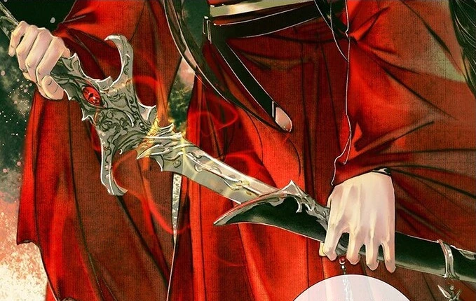

Хуа Чэн харизматичен и умен, он мало заботился о других и в основном действовал в своих собственных интересах. Никогда и никто не мог постичь истинный смысл поступков Хуа Чэна. Он был жесток, но не кровожаден, язвителен и высокомерен, хотя и по праву, так как являлся одним из самых сильных существ, он не стеснялся отпускать едкие и даже оскорбительные замечания в адрес как небожителей, так и других демонов. Кроме этого он собрал компромат на многих небожителей, заставив их бояться не только своей силы, но и раскрытия грязных тайн. Многим также приходилось нередко обращаться за помощью к Хуа Чэну, просить его о содействии кое в каких делах, поскольку и в мире людей тот обладал немалым влиянием и даже имел последователей. Хуа Чэн был настолько могущественен и влиятелен, что сам Цзюнь У избегал столкновений с ним и даже если демон совершал нападки, он не мог приказать никому из небожителей его покарать[1]. Некоторые говорили, что Хуа Чэн — единственный, кто мог проклинать и оскорблять Владыку, не опасаясь какого-либо возмездия.